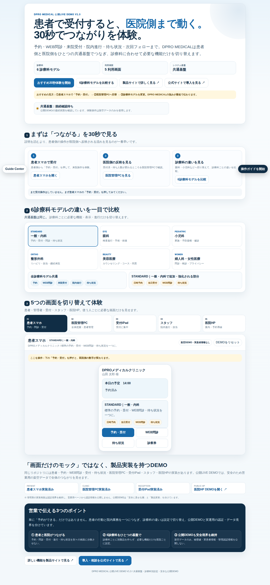

ROLE & TROUBLE
役割と、困ったとき。
役割別
患者 - 予約・問診・受付・待ち
医院管理PC - 全体確認
受付iPad - 受付
スタッフ - 院内進行
医院HP - 公開導線
困ったとき
1. 画面を再読み込み
2. Guide Centerで該当役割を確認
3. System Checkを実行
4. 解決しない場合は導入窓口へ相談
 System Check
System Check LINE相談
LINE相談Tutorialは送信・承認・削除・決済などの業務操作を自動実行しません。
Start / Resume / Replay を使いながら、患者・医院管理PC・受付iPad・スタッフ・医院HPと6診療パターンを確認します。

公開DEMOは架空データです。実患者データは使用しません。
患者 - 予約・問診・受付・待ち
医院管理PC - 全体確認
受付iPad - 受付
スタッフ - 院内進行
医院HP - 公開導線
1. 画面を再読み込み
2. Guide Centerで該当役割を確認
3. System Checkを実行
4. 解決しない場合は導入窓口へ相談
System CheckLINE相談Tutorialは送信・承認・削除・決済などの業務操作を自動実行しません。